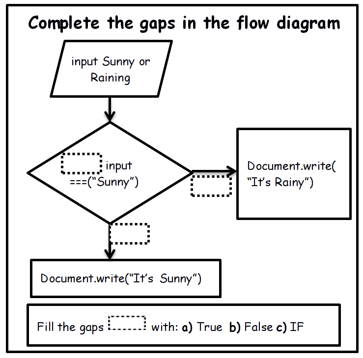
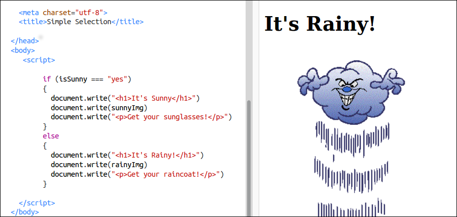

Made by Mick Fuzz and as a contribution to be remixed for Clubs by Mozilla.
Javascript is one of the key parts of the Web (together with HTML and CSS). Here we learn how to make selection decisions from user input in Javascript.
45 minutes to an hour
Preparation
First do the activity on your own to become familiar with it.
Then do a follow up bit of research on Javascript to help if students run in to trouble. This section on Codecademy is a good way to prepare.
10
min
Introduction
Give a short presentation about selection, decisions and comparisons.
We make decisions based on conditions all the time. Can you think of some?
Did you wear a coat today? Sunglasses? How did you decide what to wear today?
How much money did you take out with you? What are your plans today?
When do you put the heating on in your house? How do you decide?
We make decisions on what to wear based on the weather conditions. Have a look at this simple web page which asks if it is sunny. What happens?
Is it Sunny yet?
What happened? The web page asked a question and we gave an answer yes or no. Depending on our answer a different image goes on the screen.
We can look at the code of the page to see where the code uses this answer to make a decision about what to put on the screen. We see some code that we
already know about writing to the page and some new code too.
if (isSunny === "yes")
{
document.write("<h1>It's Sunny</h1>")
document.write(sunnyImg)
document.write("<p>Get your sunglasses!</p>")
}
else
{
document.write("<h1>It's Rainy!</h1>")
document.write(rainyImg)
document.write("<p>Get your raincoat!</p>"
}
In pairs, look at the diagram to see if you can complete it based on what you have found out.

The diagram is a way of showing what is happening in the code. We can describe it in this way.
The line of code beginning with if looks at the statement inside the () brackets. It evaluates the statement. If the statement is true then it will run the code between the following {} curly brackets. If it is false it will keep looking and find the else {} code block and run that instead. Let's learn this by trying it out.
10
min
Activity One - Remix the Rain
Let's learn by remixing a Thimble page and making it our own. We only have 5 - 10 mins to make changes but let's think what can we change easily and quickly.
We can change the text easily. Change It's Sunny or It's Rainy to something else.
With a bit more time we can find new images to display too. You can swap them with the links to images that are there now.
Don't worry, if it goes wrong you can go back here and click remix again.

Remix the rain
To make a decision about what to do we can find out the temperature and then select what we will do. Let's have a look at some code which does this in the next activity.
10
min
Activity Two - Comparing Numbers
If you have a fire at home but you don't want to put it on all the time you need to make a decision based on the temperature. We need to
compare the current temperature to see if it is too hot or cold. A temperature variable is a number variable. So how do we compare the values of number variables?
To make a decision about what to do we can find out the temperature and then select what we will do. Let's have a look at some code which does this.
var temperature = 24
if (temperature === 23) {
document.write("It is Perfect")
}
else if (temperature < 23)
{
document.write("It’s too Cold - Start a fire!")
}
else
{
document.write("It’s too Hot - Open a window")
}
What do you think is happening here? Do you know some of the symbols from Maths classes?
Let's explore what happens by playing with the code.
With a bit more time we can find new images to display too. You can swap them with the links to images that are there now.
Don't worry, if it goes wrong you can go back here and click remix again.
30
min
Activity Three - Remixing and Exploring Activity
Split learners into groups of 2 or individuals if there enough computers. Explain that we will remix or create a new page. The contents will change based on a choice.
Ask individuals / groups to make an importance choice after watching this video clip.
Daddy or Chips is also a game you can play. In a circle one person starts with the question "Daddy or Chips". The next person answers and thinks of another question as quick as they can. "Chips! Cars or Trains?" "Trains! Eating or Sleeping?"
Keep going on around the circle as quickly as you can. Playing this game helps get your creativity going.
The next activity is to REMIX a page quick asks the question "Daddy or Chips" and displays a suitable image. You need to ask and make your own choice.